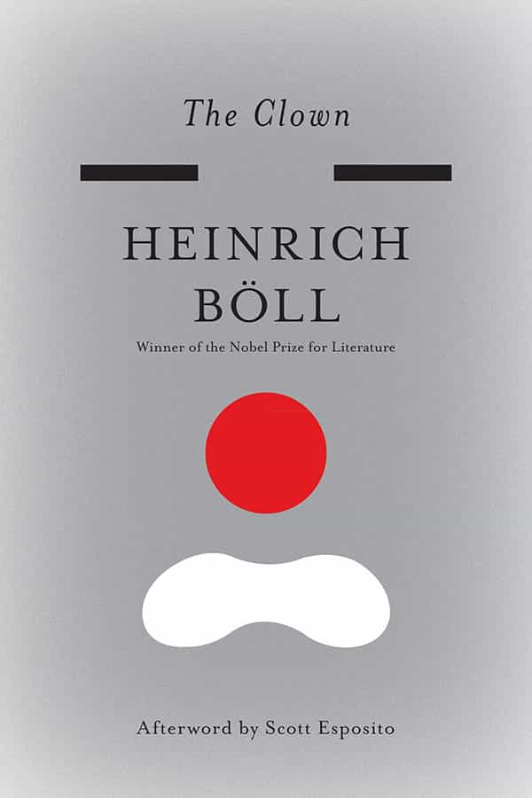

The Clown
The Clown (German: Ansichten eines Clowns, lit. “Opinions of a clown”) is a 1963 novel by West German writer Heinrich Böll.
"I always knew I was a star, and now the rest of the world seems to agree with me."
The Clown (German: Ansichten eines Clowns, lit. “Opinions of a clown”) is a 1963 novel by West German writer Heinrich Böll.